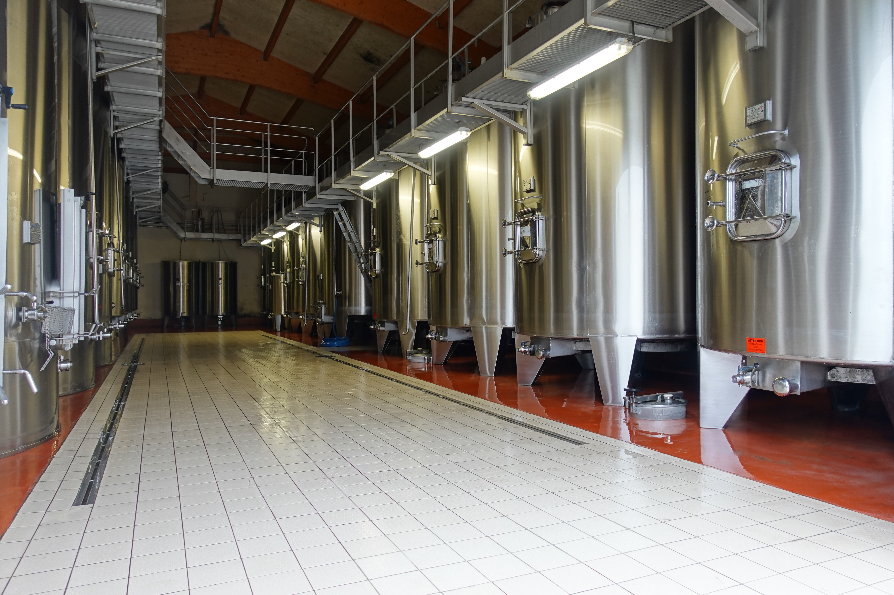
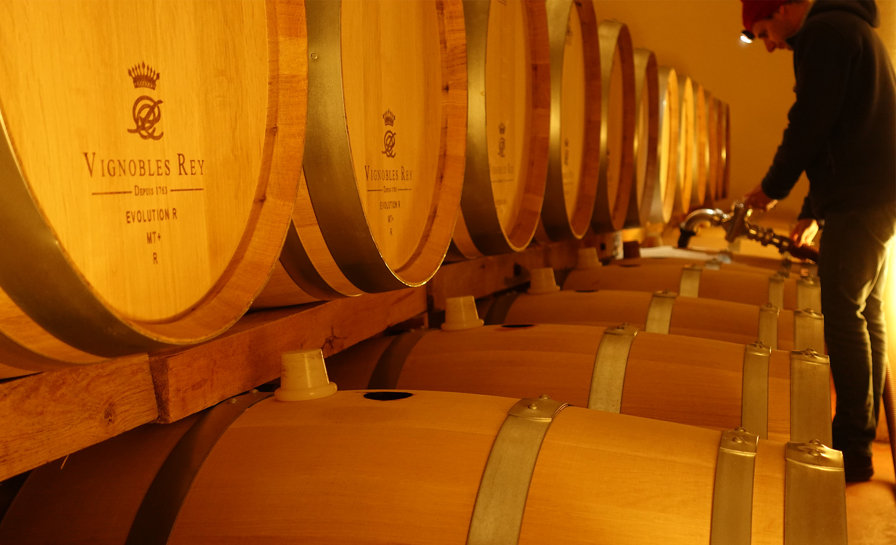
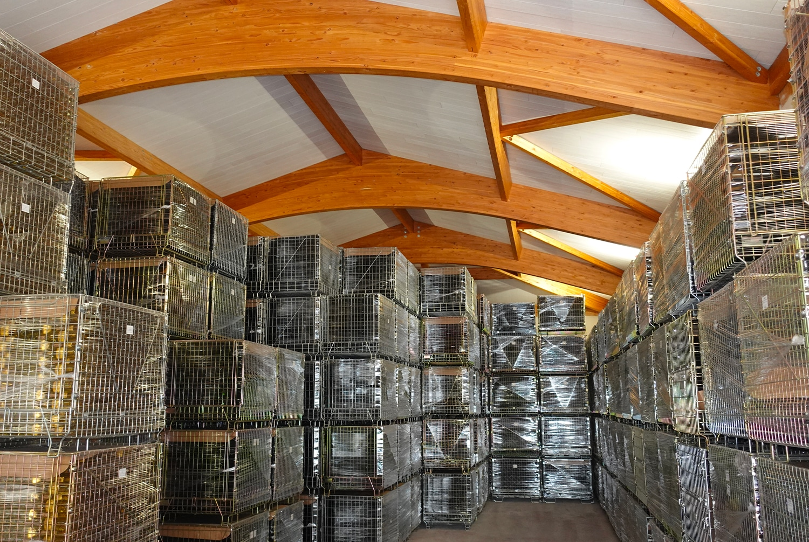

Winemaking
Tradition and modernity

The search for ripeness
As the harvest approaches, ripeness checks set the rhythm of the days in September. For white grapes, the priority is aromatic ripeness: the only reliable tool is the daily tasting of the berries.
For red grapes, tastings are just as frequent, but we look for phenolic ripeness: the quality of the skins and pips as much as the aromas.
“Like all fruit, the grape that makes good wine is the one you want to eat”

From grape to tank
During the harvest, grapes are sorted rigorously: all plant debris is removed and only the ripest berries are kept.
The white wines are vinified and aged 90% in stainless steel tanks and 10% in new oak barrels for the white Bordeaux, and exclusively in new oak barrels for the “Prestige Blanc” cuvée.

Ageing in barrels
The red wines are vinified in temperature-controlled stainless steel tanks, then, depending on the cuvée, aged for 12 to 18 months in oak barrels in the estate’s cellars, until the different cuvées are blended.

Bottling
Bottling is carried out by ourselves, in a single run, under Laurent’s supervision. This philosophy guarantees identical quality from the first to the last bottle of each cuvée.
The bottles are then stored in our 400 m² climate-controlled premises.